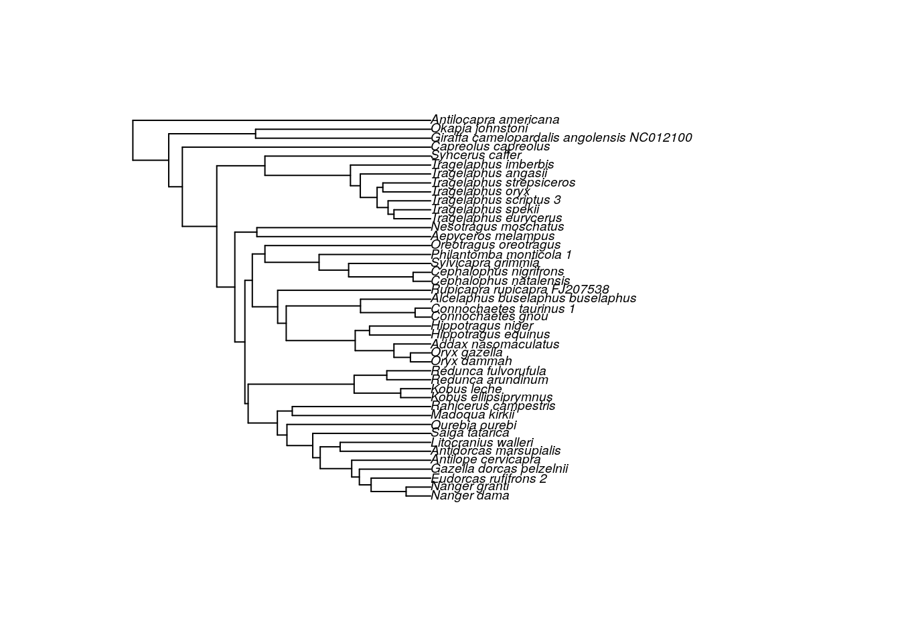
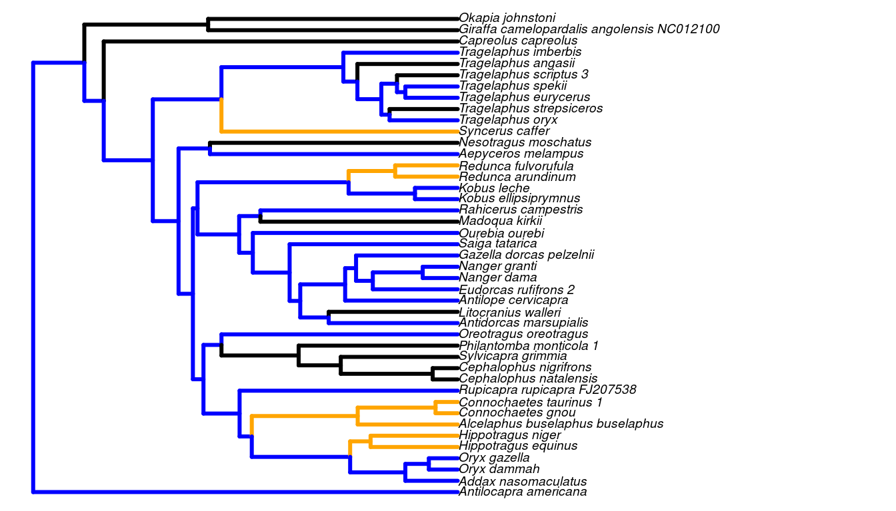

The latest stable version of SLOUCH can be installed from the CRAN (Comprehensive R Archive Network) by entering:
The phylogenetic trees used in SLOUCH are encoded as an object of class phylo. Consult the package APE (Analysis of Phylogenetics and Evolution, Paradis et al. 2004) for the base functionality, and auxillary packages such as treeio and ggtree (Yu et al. 2016) for more modern and extensive functionality for importing, exporting or plotting phylogenetic trees in various formats. For the purposes of illustrating the software, we will use a dataset of ruminant neocortices bundled with the package and a corresponding phylogenetic tree (Toljagić et al. 2017). First, we will organize the neocortex data and associated annotation data.
# Load necessary packages
library(ape)
library(slouch)
## Load the phylogenetic tree with annotation data
data(artiodactyla)
phy <- artiodactyla
## Load the neocortex dataset
data(neocortex)
## Plot the tree
plot(ladderize(phy), cex = 0.6)
Now, we have a phylogenetic tree with corresponding morphological data for the extant species. If you use your own data to fit models, it is recommended to store the data for the terminal branches in a data frame or in a similar data structure. In order to line up the data frame with the tree, SLOUCH requires the species in the data frame need to be in a particular order.
## Check whether they are lined up correctly
neocortex$species == phy$tip.label
## [1] FALSE FALSE FALSE FALSE FALSE TRUE FALSE FALSE FALSE TRUE TRUE TRUE
## [13] TRUE FALSE FALSE FALSE FALSE FALSE FALSE FALSE FALSE FALSE FALSE FALSE
## [25] FALSE FALSE FALSE FALSE FALSE FALSE FALSE FALSE FALSE FALSE FALSE FALSE
## [37] FALSE FALSE FALSE FALSE FALSE FALSE FALSEUnsurprisingly, not all of the species are in their correct places; we will have to reorder the data frame. Here is one way to do it.
neocortex <- neocortex[match(phy$tip.label, neocortex$species), ]
## Check if they line up again
neocortex$species == phy$tip.label
## [1] TRUE TRUE TRUE TRUE TRUE TRUE TRUE TRUE TRUE TRUE TRUE TRUE TRUE TRUE TRUE
## [16] TRUE TRUE TRUE TRUE TRUE TRUE TRUE TRUE TRUE TRUE TRUE TRUE TRUE TRUE TRUE
## [31] TRUE TRUE TRUE TRUE TRUE TRUE TRUE TRUE TRUE TRUE TRUE TRUE TRUEThe neocortex dataset includes neocortex area, brain mass and body mass in ruminants, primarily bovids. It also includes some ecological information such as the type of habitat (open, closed) or mode of diet (grazer, browser), see ?neocortex for further reference.
The idea here is to test whether the phylogenetic relationships have an influence on the distribution of a single variable. Most phylogenetic comparative methods will begin with this step. It is important to realize, however, that phylogenetic effects are not necessarily the same thing as phylogenetic inertia. A variable can be seen to have quite strong phylogenetic effects but such a pattern can easily come about if that variable is evolving towards optima associated with niches that themselves exhibit strong phylogenetic effects. Phylogenetic inertia needs to be measured from the residuals of a model that includes predictor variables that may or may not themselves be phylogenetically structured. First, we plot the neocortex-brain allometry:
braincentered <- neocortex$brain_mass_g_log_mean - mean(neocortex$brain_mass_g_log_mean)
plot(x = braincentered,
y = neocortex$neocortex_area_mm2_log_mean,
xlab = "Mean log brain mass (g)",
ylab = "Mean log neocortex area (mm2)")Scatter plot of mean log neocortex area (mm\(^2\)) on mean log brain mass (g).
The way to test for an overall phylogenetic effect in the SLOUCH program is to fit an intercept-only or grand mean model. The program will estimate the phylogenetic half-life \(t_{1/2}\) (\(t_{1/2} = \log(2)/\alpha\)), and the stationary variance \(v_y\) (\(= \sigma^2_y / 2 \alpha\)), using likelihood, and the intercept (\(b_0\)) using generalized least squares. For now we will use the numerical optimizer (the default setting):
model0 <- slouch.fit(phy = phy,
species = neocortex$species,
response = neocortex$neocortex_area_mm2_log_mean)A minimal overview of model0 can be generated by typing print(model0). The output should be observed with caution until we trust that the hillclimber has converged at a global maximum, or by using a fine-grained grid search to accurately estimate \(t_{1/2}\) and \(v_y\).
print(model0)
## Response: neocortex$neocortex_area_mm2_log_mean
##
## Model fit:
## AICc Support R squared
## 70.55 -31.97 0.00
##
## ML estimate(s):
## Phylogenetic half-life: 298671.4586
## Stationary variance: 4901.8638
##
## Coefficients:
## (Intercept)
## 9.759By entering summary(model0) we get a more detailed summary of the model output. It displays the best estimates of all the parameters where support for the regression parameters are given as standard errors, and log-likelihood values as well as various information criteria for the best estimate model-fit.
summary(model0)
## Important - Always inspect the likelihood surface of the model parameters with
## grid search before evaluating model fit & results.
##
## Maximum-likelihood estimates
## Estimate
## Phylogenetic half-life 298671.5
## Stationary variance 4901.864
##
## Inferred maximum-likelihood parameters
## Value
## Mean phylogenetic correction factor 3.155009e-05
## Rate of adaptation 2.320768e-06
## Diffusion variance 0.02275218
##
## Intercepts
## Estimates Std. error
## (Intercept) 9.759026 0.3679693
##
## Model fit summary
## Values
## Support -32.0
## AIC 69.9
## AICc 70.5
## SIC 75.2
## R squared 0.0
## SST 43.0
## SSE 43.0
## N (params) 3.0The phylogenetic half-life parameter (\(t_{1/2} = \log(2) / \alpha\)) measures the influence of the ancestral state of the variable in question relative to the tendency to evolve towards the common ancestral state (the intercept). Conversely, \(\alpha\) measures the rate of adaptation. If the best estimate of \(t_{1/2}\) is 0, the ancestral state does not influence the current state of the variable. The larger \(t_{1/2}\) gets, the more influence the past state of the variable has on its current state (i.e. the trait‘s evolution approaches a Brownian motion as \(t_{1/2}\) approaches infinity). The units of the phylogenetic half-lives are the same units as the branch lengths in the phylogenetic tree, phy$edge.length. The total depth, or distance from the root, can for all nodes be calculated with node.depth.edgelength(phy). For this phylogenetic tree the maximum tree depth is about 27 million years.
The parameters we estimate for the models that have a single random predictor variable are: \(t_{1/2}\), \(\sigma_x^2\), \(v_y\), and the regression parameters \(b_i\). Recall that the regression parameters \(b_i\) can be given in one of two ways, as an evolutionary regression or as an optimal regression where the latter is “corrected” by the phylogenetic correction factor. The predictor variance, \(\sigma_x^2\), is estimated a priori by SLOUCH. The estimation procedure itself is performed in a similar manner as for the intercept-only models above. For example, if we wanted to perform a regression of log neocortex size (\(\text{mm}^2\)) on log brain mass (g), we would enter:
model3 <- slouch.fit(phy = phy,
hl_values = 1,
vy_values = 0.05,
species = neocortex$species,
response = neocortex$neocortex_area_mm2_log_mean,
random.cov = braincentered)
model3
## Response: neocortex$neocortex_area_mm2_log_mean
##
## Model fit:
## AICc Support R squared
## -18.5127 13.7827 0.8905
##
## ML estimate(s):
## Phylogenetic half-life: 31.3889
## Stationary variance: 0.0643
##
## Coefficients:
## (Intercept) braincentered
## 9.6761 0.8373Comparative analyses based on species averages should consider the estimation error in these averages as measurement error. This is particularly pressing in fields such as evolutionary physiology, where the measurements of individual organisms may be laborious and expensive. Obtaining many measurements from many individuals from many species is difficult, and one often ends up with sample sizes that are small and uneven across species. In such a situation the variance attributable to measurement error can be a substantial fraction of the total, and one wants to weigh the species data according to their reliability. It is also possible that measurement variance may generate a downward bias in estimates of phylogenetic effects, because it makes species appear less statistically correlated than they are in reality. As discussed above, SLOUCH can incorporate measurement variance in both response and predictor variables.
For the neocortex data, estimates of measurement variance can be obtained as the square of the standard error of the species means. There is, however, a practical difficulty in that small sample sizes also makes for unreliable estimates of the measurement variance; the standard error of a species average obtained from a handful of individuals is so inaccurate as to be worthless. We therefore adopted the procedure of assuming that the within-species variance of each variable was the same for all species. The within-species variance estimated average of the sample variances of each variable was estimated as a sample-size-weighted average of the sample variances of each species; i.e. as
\[ \sigma^2_w = \frac{\sum_i \sigma_{wi}^2 (n_i - 1)}{\sum_i (n_i - 1)} \]
where \(\sigma_{wi}^2\) is the sample variance of species \(i\), and \(n_i\) is the sample size of species \(i\). In this way, the larger sample sizes are weighted more. We then estimated the measurement variance of each species as \(\sigma_w^2 / n_i\). See Grabowski et al. (2016) for further discussion. In order to incorporate measurement variance in the model, would enter:
model3 <- slouch.fit(phy = phy,
species = neocortex$species,
response = neocortex$neocortex_area_mm2_log_mean,
mv.response = neocortex$neocortex_se_squared,
random.cov = braincentered,
mv.random.cov = neocortex$brain_se_squared)plot(x = braincentered,
y = neocortex$neocortex_area_mm2_log_mean,
xlab = "Mean log brain mass (g)",
ylab = "Mean log neocortex area (mm2)")
abline(model3$beta_evolutionary$coefficients_bias_corr[,1],
col = "black", lwd = 2)
abline(model3$beta_primary$coefficients_bias_corr[,1],
col = "orange", lwd = 2)The evolutionary (black) and optimal (orange) regression lines for the model of mean log neocortex area (mm\(^2\)) on mean log brain mass (g), both corrected for bias due to measurement error in mean log brain mass.
While the single-optimum model showed a strong phylogenetic signal, this model exhibits much less phylogenetic inertia, with best estimate of the phylogenetic half-life (\(t_{1/2}\)) being 1 myr. Here, the optimal regression is steeper than the evolutionary regression. It is also possible to fit a model with multiple continuous covariates, however the input to random.cov must be a matrix or data frame that has column names, and the observational error passed to mv.random.cov must be a matrix or data frame of the same shape as random.cov.
bodycentered <- neocortex$body_mass_g_log_mean - mean(neocortex$body_mass_g_log_mean)
model4 <-
slouch.fit(phy = phy,
species = neocortex$species,
response = neocortex$neocortex_area_mm2_log_mean,
mv.response = neocortex$neocortex_se_squared,
random.cov = cbind(braincentered,
bodycentered),
mv.random.cov = cbind(neocortex$brain_se_squared,
neocortex$body_se_squared))
model4
## Response: neocortex$neocortex_area_mm2_log_mean
##
## Model fit:
## AICc Support R squared
## -17.3498 14.4857 0.8916
##
## ML estimate(s):
## Phylogenetic half-life: 228.1765
## Stationary variance: 0.3565
##
## Coefficients:
## (Intercept) braincentered bodycentered
## 9.68778 0.97799 -0.08184The slouch.fit function will on default estimate the intercept \(k\). If the phylogenetic tree is non-ultrametric, for example due to the inclusion of extinct species, it is possible to estimate the components of \(k\). Recall that, when \(y\) is evolving according to an Ornstein-Uhlenbeck process in response to one or more predictors \(x\) evolving as Brownian motions, the intercept \(k\) is
\[ k = e^{-\alpha t}y_a + (1 - e^{- \alpha t})b_0 + (1 - e^{-\alpha t} - \rho(\alpha t))(b_1x_{a1} + b_2x_{a2} + \dots) \]
SLOUCH can independently estimate \(y_a\), \(b_0\) and the sum \(bx_a = (b_1x_{a1} + b_2x_{a2} + \dots)\). Using the same example with neocortex evolving in response to brain size, we would specify:
model5 <- slouch.fit(phy = phy,
species = neocortex$species,
response = neocortex$neocortex_area_mm2_log_mean,
mv.response = neocortex$neocortex_se_squared,
random.cov = braincentered,
mv.random.cov = neocortex$brain_se_squared,
estimate.Ya = TRUE,
estimate.bXa = TRUE)The parameters \(y_a\) and \(bx_a\) represent the ancestral states for \(y\) and \(x\) separate from the regression intercept \(b_0\). Since this phylogenetic tree is ultrametric, we cannot recover independent estimates of these. If we would try to execute the above code, we would not be able to estimate the GLS coefficients since the model matrix becomes singular. Even if we had a non-ultrametric tree, the intercept components are often estimated with extremely low power, so it can make sense to estimate them as a combined intercept term. This is done by default, or by specifying slouch.fit(..., estimate.Ya = FALSE, estimate.bXa = FALSE) in the function call. The phylogenetic residual covariance matrix will always be computed based on the phylogenetic tree, whether it is ultrametric or not. In some cases (for example, when inertia is small), estimating the components of \(k\) will not work (due mainly to numerical issues because of unstable coefficient and parameter combinations in the intercept terms and non-convergence of regression parameters). Also note that, in the non-ultrametric case, each species theoretically has its own optimal intercept (\(b_0\)), however the reported estimate is actually an average of these. Its primary purpose is to allow us to plot a regression line.
SLOUCH can fit models with multiple adaptive regimes or niches over the branches of the phylogenetic tree. We will fit neocortex size as a function of diet in ruminants. Trees in the phylo format are represented by the edges found in phy$edge, where each edge connects two vertices or nodes. All of the tip nodes have indices starting from 1, 2, 3 … until \(n_{tips}\), in this case 43. The root node has index \(n_{tips}\)+1, here 44, and the rest of the internal nodes have indices (\(n_{tips}\)+2, \(n_{tips}\)+3, …, \(n_{nodes}\)). When running this type of model, we will need to specify the internal adaptive regimes in the order of node indices (\(n_{tips}\)+1, \(n_{tips}\)+2, \(n_{tips}\)+3, …, \(n_{nodes}\)). The regimes for the tips must be supplied to the fixed.fact argument (slouch.fit(..., fixed.fact = neocortex$diet)), and the regimes for the internal nodes must be assigned to phy$node.label. In order to plot and visually verify that the ancestral state configuration is sensible, we need to have all the regimes in the order of the edges, not the nodes.
## Inspect the internal node regimes
## These have order n+1, n+2, n+3 ...
internal_regimes <- factor(phy$node.label)
## Concatenate tip and internal regimes. These will have order 1,2,3 ...
regimes <- c(neocortex$diet, internal_regimes)
## Pick out the regimes of the edges, in the order of phy$edge
edge_regimes <- factor(regimes[phy$edge[,2]])
plot(phy,
edge.color = c("Black", "Orange", "blue")[edge_regimes],
edge.width = 3, cex = 0.6)
If it looks like there are no visible mistakes, we can go ahead and fit the model in SLOUCH.
model6 <- slouch.fit(phy = phy,
species = neocortex$species,
response = neocortex$neocortex_area_mm2_log_mean,
direct.cov = neocortex$brain_mass_g_log_mean,
fixed.fact = neocortex$diet)
model6
## Response: neocortex$neocortex_area_mm2_log_mean
##
## Model fit:
## AICc Support R squared
## -16.1789 15.2561 0.9104
##
## ML estimate(s):
## Phylogenetic half-life: 8.5282
## Stationary variance: 0.0357
##
## Coefficients:
## Br Gr
## 5.3747 5.6045
## MF neocortex$brain_mass_g_log_mean
## 5.5559 0.8204SLOUCH can also fit models with continuous covariates that don’t have any phylogenetic covariance structure, variables that influence the optimum directly and immediately.
model7 <- slouch.fit(phy = phy,
species = neocortex$species,
response = neocortex$neocortex_area_mm2_log_mean,
mv.response = neocortex$neocortex_se_squared,
direct.cov = neocortex$brain_mass_g_log_mean,
mv.direct.cov = neocortex$brain_se_squared)
model7
## Response: neocortex$neocortex_area_mm2_log_mean
##
## Model fit:
## AICc Support R squared
## -20.0123 14.5325 0.8994
##
## ML estimate(s):
## Phylogenetic half-life: 106.2348
## Stationary variance: 0.1481
##
## Coefficients:
## (Intercept) neocortex$brain_mass_g_log_mean
## 5.4053 0.8463The brown.fit() function can fit the same kinds of models that slouch.fit() does, except under a Brownian motion model of evolution. The parameters \(v_y = \sigma_y^2/2\alpha\) and \(t_{1/2}\) no longer apply. The intercept-only model can be fitted by entering the following:
model8 <- brown.fit(phy = phy,
species = neocortex$species,
response = neocortex$neocortex_area_mm2_log_mean,
mv.response = neocortex$neocortex_se_squared)
model8
## Response: neocortex$neocortex_area_mm2_log_mean
##
## Model fit:
## AICc Support R squared
## 68.45 -32.08 0.00
##
## ML estimate(s):
## Diffusion variance: 0.0225
##
## Coefficients:
## (Intercept)
## 9.758We will fit log neocortex area with different trends for each dietary regime:
model9 <- brown.fit(phy = phy,
species = neocortex$species,
response = neocortex$neocortex_area_mm2_log_mean,
mv.response = neocortex$neocortex_se_squared,
fixed.fact = neocortex$diet)
model9
## Response: neocortex$neocortex_area_mm2_log_mean
##
## Model fit:
## AICc Support R squared
## 67.2892 -29.1183 0.1292
##
## ML estimate(s):
## Diffusion variance: 0.0196
##
## Coefficients:
## Br Gr MF
## 0.3418 0.4079 0.3647In this example, the trends (\(\tau\)) are in units of \(\log \text{neocortex} (\text{mm}^2) \times \text{myr}^{-1}\). Since with this procedure we assume that \(y_a = 0\), we can only interpret the relative differences among the trends. By looking at the pairwise contrasts, we can see that the expected increase in neocortex for grazers is slightly larger than for browsers and mixed feeders.
We can also fit a model where the trend is expressed as a linear function of another variable (\(\tau = a + bx\)). To fit such a model of log neocortex area on log brain mass, we would enter:
model10 <- brown.fit(phy = phy,
species = neocortex$species,
response = neocortex$neocortex_area_mm2_log_mean,
mv.response = neocortex$neocortex_se_squared,
random.cov = braincentered,
mv.random.cov = neocortex$brain_se_squared)
model10
## Response: neocortex$neocortex_area_mm2_log_mean
##
## Model fit:
## AICc Support R squared
## 215.0217 -104.2031 0.9149
##
## ML estimate(s):
## Diffusion variance: 0
##
## Coefficients:
## (Intercept) braincentered
## 9.7050 0.8692Note that even though we model the trend in neocortex size as a function of brain size, there is no information of any net change per time, as we assume that \(y_a = 0\). Thus, we interpret the model either as being zero-“net trend” or being agnostic of the direction of change per time. If we want to get the predictions for this model, we get
\[ y = y_a + a + \rho bx. \] Substituting \(y_a = 0\), \(a = 9.71\), \(\rho = 27.2 \text{myr} / 2\), \(b = 0.064 \text{myr}^{-1}\), we get the observed allometric relationship between neocortex size (\(y\)) and brain size (\(x\)):
\[ y = 9.71 + 0.87x. \] SLOUCH also computes the observed relationship automatically:
Previously we used the numerical optimizer to find maximum-likelihood estimates of \(t_{1/2}\) and \(v_y\). This technique uses the method “L-BFGS-B” in the optim(...) function to estimate parameters in the OU model, and method “Brent” when \(\alpha\) is constrained to zero and the model is reduced to a Brownian motion. On default it will start on a random combination of \(t_{1/2}\) and \(\sigma_y^2/2\alpha\), but this may also be specified. While the hillclimber is fast and may seem accurate at first glance, there are some drawbacks. If the likelihood search space has several local maxima, the hillclimber may converge at a sub-optimal location and give parameter estimates that are not truly maximum-likelihood estimates. Additionally, even though the hillclimber may converge at some local or global maximum, it will not indicate whether the support region of the parameters is narrow or wide. Another problem when using the hillclimber is that, depending on the specified model, the residual variance-covariance matrix \(\mathbf{V}\) may collapse if \(\sigma_y^2/2\alpha\) reaches zero. The immediate consequence is that matrix is non-invertible, and the program will return an error. If within-species observational error is non-zero and added to the model, this does not happen. In order to use the hillclimber, it may be necessary to constrain its search space such that \(\sigma_y^2/2\alpha\) does not enter zero or close to zero. The exact feasible boundary for this may depend on the scale of the response trait.
The alternative is to use a grid search where we provide vectors of potential values for each parameter to the program to find the combination that maximizes the likelihood. One way to find the best parameters is to start with a rough grid (i.e. values of \(t_{1/2}\) and \(v_y\) incremented by large integer numbers) and then to “home in” on the best supported region with finer scaled grids. Some caution and “trial and error” need to be exercised here as it is possible to miss the support region entirely if the grid values are too widely spaced. There are several ways to create a vector of values in R for this purpose:
## The manual way
h <- c(0.01, 0.1, 1, 5, 10, 15, 20, 100)
vy <- h
## Using the seq function
h <- seq(from = 0.001, to = 100, length.out = 15)
vy <- seq(from = 0.001, to = 5, length.out = 15)
## Using a seq function with logarithmically spaced steps
h <- lseq(from = 0.001, to = 100, length.out = 15)
vy <- lseq(from = 0.001, to = 5, length.out = 15)Using the default values of the model fitting function slouch.fit, we use an initial grid search to find the maximum likelihood estimates of \(t_{1/2}\) and \(v_y\) in a single-optimum model, and change the grid location depending on how the surface looks. When using grid search, it may be easier to explicitly disable the hillclimber technique, i.e. slouch.fit(... hillclimb = FALSE).
model_grid_0 <- slouch.fit(phy = phy,
hl_values = seq(0.001, 12, length.out = 20),
vy_values = seq(0.1, 1, length.out = 20),
species = neocortex$species,
response = neocortex$neocortex_area_mm2_log_mean,
hillclimb = FALSE)
plot(model_grid_0)Three-dimensional joint support region for the estimates of half-lives and stationary variances, for the single-optimum model.
The vertical axis in Figure (…) represents the log-likelihood standardized so that the maximum log-likelihood equals 0. The two horizontal axes are the vector of hl_values and vy_values that we defined in the function arguments. The peak that rises out of the flat surface therefore, represents the specific combination of hl_values and vy_values that are more than two support units below the best estimate. The flat surface itself represents parameter values falling outside the 2-unit support region (as defined by Edwards 1992). If the user prefers to plot an \(m\)-unit support region, a support value of \(m\) can be specified in slouch.fit by supplying the argument slouch.fit(... ,support = m).
model_grid_1 <- slouch.fit(phy = phy,
hl_values = seq(0.001, 150, length.out = 20),
vy_values = seq(0.1, 2.5, length.out = 20),
species = neocortex$species,
response = neocortex$neocortex_area_mm2_log_mean,
hillclimb = FALSE)
plot(model_grid_1)Another slice of the log likelihood surface for the same single-optimum model
The plots of the likelihood surfaces are both based on the same data, but with different grid location and resolution. This graphical output is useful for finding and refining the support region where the aim would be to identify the upper and lower 2-unit marginal support regions for \(t_{1/2}\) and \(v_y\). Note that the support region is relative to the best estimate among the parameters evaluated in the entire parameter search (including parameters evaluated with the hillclimber). Thus it is essential to include the best estimate when calculating the support set. The optima and model fit statistics that are reported in the summary are conditional on the combination of these \(t_{1/2}\) and \(v_y\) that give the highest log-likelihood; in this case the peak of the surface in the likelihood plot. If the grid-search does not contain the true maximum likelihood, the model outputs will reflect this. It is also possible to use other packages to plot the grid-search likelihood surface, for a more aesthetic look (not run).
library(plotly)
p <- plot_ly(x = model0$supportplot$hl,
y = model0$supportplot$vy,
z = model0$supportplot$z) %>%
add_surface() %>%
layout(title = "Grid-search",
scene = list(xaxis = list(title = "Phylogenetic half-life"),
yaxis = list(title = "Stationary variance"),
zaxis = list(title = "Log-likelihood")))
pBurnham, K. P. & Anderson, D. R. (1998). Model selection and inference: A practical information- theoretic approach. Springer.
Butler, M. A., & King, A. A. (2004). Phylogenetic comparative analysis: a modeling approach for adaptive evolution. American Naturalist, 164(6), 683–695. https://doi.org/10.1086/426002
Edwards, A. W. F. (1992). Likelihood. expanded edition Johns Hopkins University Press. Baltimore, MD.
Escudero, M., Hipp, A. L., Hansen, T. F., Voje, K. L., & Luceño, M. (2012). Selection and inertia in the evolution of holocentric chromosomes in sedges (Carex, Cyperaceae). New Phytologist, 195(1), 237–247. https://doi.org/10.1111/j.1469-8137.2012.04137.x
Grabowski, M., Voje, K. L., & Hansen, T. F. (2016). Evolutionary modeling and correcting for observation error support a 3/5 brain-body allometry for primates. Journal of human evolution, 94, 106-116.
Hansen, T. F. (1997). Stabilizing Selection and the Comparative Analysis of Adaptation. Evolution, 51(5), 1341.
Hansen, T. F., & Martins, E. P. (1996). Translating between microevolutionary process and macroevolutionary patterns: the correlation structure of interspecific data. Evolution, 50(4), 1404-1417.
Hansen, T. F., & Orzack, S. H. (2005). Assessing current adaptation and phylogenetic inertia as explanations of trait evolution: the need for controlled comparisons. Evolution, 59(10), 2063-2072.
Hansen, T. F., Pienaar, J., & Orzack, S. H. (2008). A comparative method for studying adaptation to a randomly evolving environment. Evolution, 62(8), 1965–1977. https://doi.org/10.1111/j.1558-5646.2008.00412.x
Hansen, T. F., & Bartoszek, K. (2012). Interpreting the evolutionary regression: The interplay between observational and biological errors in phylogenetic comparative studies. Systematic Biology, 61(3), 413–425. https://doi.org/10.1093/sysbio/syr122
Hansen, T. F. (2014). Use and misuse of comparative methods in the study of adaptation. In Garamszegi & L. Zsolt (Eds.), Modern Phylogenetic Comparative Methods and their Application in Evolutionary Biology (pp. 351–379). Springer. https://doi.org/10.1007/978-3-662-43550-2_14
Harvey, P. H., & Pagel, M. D. (1991). The comparative method in evolutionary biology (Vol. 239). Oxford: Oxford university press.
Martins, E. P., & Hansen, T. F. (1997). Phylogenies and the comparative method: a general approach to incorporating phylogenetic information into the analysis of interspecific data. The American Naturalist, 149(4), 646-667.
O’Meara, B. C., & Beaulieu, J. M. (2014). Modelling stabilizing selection: The attraction of Ornstein-Uhlenbeck models. In Garamszegi & L. Zsolt (Eds.), Modern Phylogenetic Comparative Methods and their Application in Evolutionary Biology (pp. 381–393). Springer. https://doi.org/10.1007/978-3-662-43550-2_15
Labra, A., Pienaar, J., & Hansen, T. F. (2009). Evolution of Thermal Physiology in Liolaemus Lizards: Adaptation, Phylogenetic Inertia, and Niche Tracking. The American Naturalist, 174(2), 204–220. https://doi.org/10.1086/600088
Ridley, M. (1983). The explanation of organic diversity: the comparative method and adaptations for mating. Oxford University Press, USA.
Toljagić, O., Voje, K. L., Matschiner, M., Liow, L. H., & Hansen, T. F. (2017). Millions of years behind: Slow adaptation of ruminants to grasslands. Systematic Biology, (318). https://doi.org/10.1093/sysbio/syx059
Sober, E. (2008). Evidence and evolution: The logic behind the science. Cambridge University Press.
Beaulieu, J. M., Jhwueng, D. C., Boettiger, C., & O’Meara, B. C. (2012). Modeling stabilizing selection: expanding the Ornstein–Uhlenbeck model of adaptive evolution. Evolution, 66(8), 2369-2383.